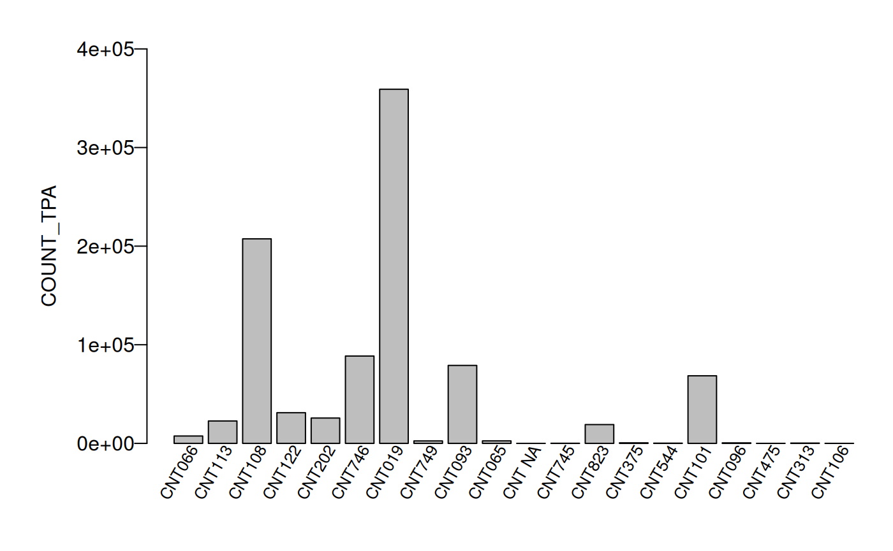
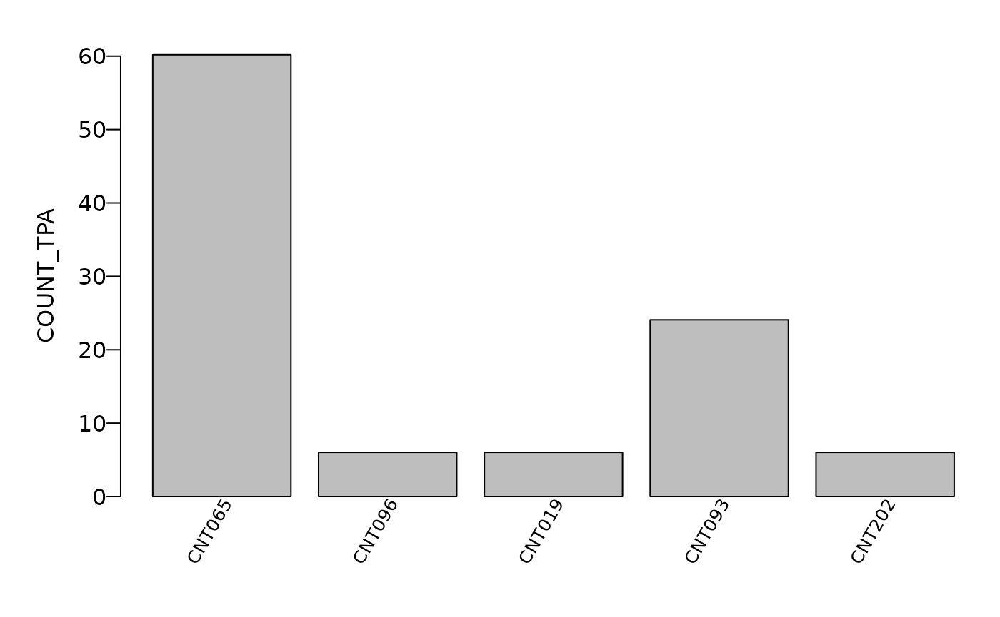
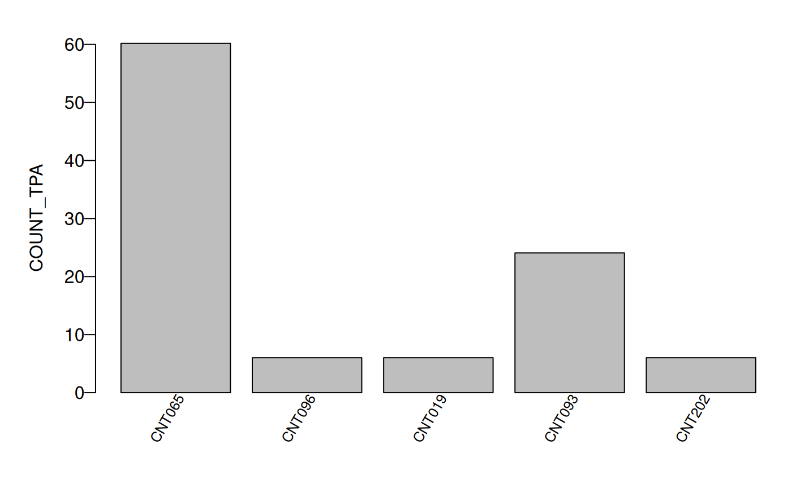

FIESTA Overview
The R package, FIESTA (Forest Inventory ESTimation and Analysis) is a research estimation tool for analysts that work with sample-based inventory data like that from the U.S. Department of Agriculture, Forest Service, Forest Inventory and Analysis (FIA) Program to accommodate: unique population boundaries, different evaluation time periods, customized stratification schemes, non-standard variance equations, integration of multi-scale remotely-sensed data and other auxiliary information, and interaction with other modeling and estimation tools from CRAN R’s library of packages. FIESTA contains a collection of functions that can access FIA databases, summarize and compile plot and spatial data, and generate estimates with associated sampling errors.
Functions are organized by type or objective and are named with a corresponding prefix:
Core Functions
- Database tools (DB) - functions for querying and extracting data from FIA’s national database.
- Data tools (dat) - functions for summarizing and exploring FIA data.
- Spatial tools (sp) - functions for manipulating and summarizing spatial data.
Estimation Modules
- Green-Book (GB) - functions for FIA’s standard ‘Green-Book’ estimators.
- Photo-Based (PB) - functions for supplementary photo-based estimators.
- Small Area (SA) - functions for integration with available small area estimators (SAE).
- Model-Assisted (MA) - functions for integration with available Model-Assisted estimators.
Analysis Tools
- Analysis tools (an) - wrapper functions for stream-lining estimation processes.
Overview of FIESTA data (dat) tools
FIESTA’s dat tools assist with customizing variables as well as summarizing and visualizing FIA data. The datLUTclass and datLUTnm functions help with merging look-up tables to support new variables, standard FIA code names or unique names, or groupings of discrete or continuous data values. The datSum* functions provide tools for aggregating FIA data for estimation, mapping, or exploratory data analyses.
FIESTA’s tree estimates require tree data summarized to the condition (base unit) domain level and extrapolated to an acre to account for trees sampled from different plot sizes. An adjustment factor is applied to adjust for nonsampled plots across different strata (adj=‘samp’) within the area of interest for GB estimates or within each plot (adj=‘plot’) for MA and SA estimates.
Objective of tutorial
The objective of this tutorial is to demonstrate the use of FIESTA’s dat tools for customizing, summarizing, and visualizing FIA data. The examples use data from two inventory years of field measurements in the state of Wyoming, from FIADB_1.7.2.00, last updated June 20, 2018, downloaded on June 25, 2018 and stored as internal data objects in FIESTA.
| FUNCTION | DESCRIPTION |
|---|---|
| datFilter() | Subsets a data table by specified filter(s). |
| datFreq() | Generates frequency table. |
| datPivot() | Generates pivot table. |
| datBarplot() | Generates bar plot. |
| datBarplotStacked() | Generates stacked bar plot. |
| datPiechart() | Generates pie chart. |
| datLUTclass() | Merge look-up table for classifying continuous data (e.g., DIA). |
| datLUTnm() | Merge look-up table to append names or categories. |
| datSumCond() | Aggregates numeric condition data to plot level. |
| datSumTree() | Aggregates numeric tree data to the plot or condition-level. |
| datSumTreeDom() | Aggregates numeric tree data by tree domain to plot or condition level. |
Set up
We just load the FIESTA library to get started with the
examples.
The following examples use FIA data from Wyoming for inventory years 2011-2013.
datFilter()
The datFilter function subsets a data table by specified
filter(s) or logical statement and returns a list of the filtered data
table and the filter.
Example 3: Subset Trees That Are Standing Dead Aspens in Wyoming, and Subset Other Tables to Match
View Example
WYtreedat.dead2 <- datFilter(
x = WYtree,
xfilter = "STATUSCD == 2 & STANDING_DEAD_CD == 1 & SPCD == 746",
othertabnms = c("WYplt", "WYcond")
)
names(WYtreedat.dead2)output
## [1] "xf" "xfilter" "cliptabs"
WYtree.deadasp2 <- WYtreedat.dead2$xf
head(WYtree.deadasp2)output
## PLT_CN CONDID SUBP TREE STATUSCD SPCD SPGRPCD DIA HT
## <char> <num> <num> <num> <num> <num> <num> <num> <num>
## 1: 40404831010690 1 4 1 2 746 44 5.6 14
## 2: 40404843010690 1 4 2 2 746 44 7.9 29
## 3: 40404920010690 1 1 2 2 746 44 7.4 44
## 4: 40404920010690 1 1 16 2 746 44 8.5 38
## 5: 40404920010690 1 2 1 2 746 44 8.9 42
## 6: 40404920010690 1 2 11 2 746 44 10.3 40
## TREECLCD AGENTCD STANDING_DEAD_CD VOLCFNET VOLCFGRS VOLBFNET TPA_UNADJ
## <num> <num> <num> <num> <num> <num> <num>
## 1: 3 20 1 0.475875 0.634500 NA 6.018046
## 2: 3 70 1 2.635591 3.467883 NA 6.018046
## 3: 3 20 1 4.286433 4.609068 NA 6.018046
## 4: 3 NA 1 5.063574 5.386781 NA 6.018046
## 5: 3 20 1 6.318505 6.581776 NA 6.018046
## 6: 4 NA 1 2.960642 8.483146 NA 6.018046
## DRYBIO_AG CARBON_AG BA
## <num> <num> <num>
## 1: 10.04138 4.829904 0.1710374
## 2: 52.51776 25.261040 0.3403841
## 3: 140.95722 66.672764 0.2986610
## 4: 157.54214 74.517431 0.3940515
## 5: 177.64053 84.023971 0.4320113
## 6: 32.12402 15.162538 0.5786149
dim(WYtree.deadasp2)output
## [1] 211 19
WYtree.deadasptabs <- WYtreedat.dead2$cliptabs
names(WYtree.deadasptabs)output
## [1] "clip_WYplt" "clip_WYcond"
WYplt.deadasp <- WYtree.deadasptabs$clip_WYplt
WYcond.deadasp <- WYtree.deadasptabs$clip_WYcond
dim(WYplt.deadasp)output
## [1] 40 20
dim(WYcond.deadasp)output
## [1] 56 26
datFreq()
The datFreq function generates a frequency table from a
data frame, including number of records by a specified variable or
variables in the data frame with optional totals and/or subtotals.
Example: Multiple Uses
View Example
## Get number of plots by county
datFreq(
x = WYplt,
xvar="COUNTYCD"
)output
## COUNTYCD FREQ
## 1 1 133
## 2 3 98
## 3 5 152
## 4 7 245
## 5 9 133
## 6 11 85
## 7 13 290
## 8 15 70
## 9 17 58
## 10 19 128
## 11 21 86
## 12 23 132
## 13 25 175
## 14 27 79
## 15 29 216
## 16 31 64
## 17 33 82
## 18 35 158
## 19 37 339
## 20 39 125
## 21 41 63
## 22 43 63
## 23 45 73
## Get number of plots by county and plot status
datFreq(
x = WYplt,
xvar=c("COUNTYCD", "PLOT_STATUS_CD")
)output
## COUNTYCD PLOT_STATUS_CD FREQ
## 1 1 1 24
## 2 1 2 109
## 3 3 1 12
## 4 3 2 86
## 5 5 1 14
## 6 5 2 138
## 7 7 1 36
## 8 7 2 209
## 9 9 1 18
## 10 9 2 115
## 11 11 1 26
## 12 11 2 59
## 13 13 1 53
## 14 13 2 237
## 15 15 1 2
## 16 15 2 68
## 17 17 1 8
## 18 17 2 50
## 19 19 1 22
## 20 19 2 106
## 21 21 1 2
## 22 21 2 84
## 23 23 1 38
## 24 23 2 94
## 25 25 1 7
## 26 25 2 168
## 27 27 1 2
## 28 27 2 77
## 29 29 1 99
## 30 29 2 117
## 31 31 1 8
## 32 31 2 56
## 33 33 1 20
## 34 33 2 62
## 35 35 1 44
## 36 35 2 114
## 37 37 1 9
## 38 37 2 330
## 39 39 1 94
## 40 39 2 31
## 41 41 1 6
## 42 41 2 57
## 43 43 1 4
## 44 43 2 59
## 45 45 1 8
## 46 45 2 65
## Get number of plots by county and plot status with subtotals
datFreq(
x = WYplt,
xvar = c("COUNTYCD", "PLOT_STATUS_CD"),
subtotal = TRUE
)output
## COUNTYCD PLOT_STATUS_CD FREQ
## 1 1 1 24
## 3 3 1 12
## 5 5 1 14
## 7 7 1 36
## 9 9 1 18
## 11 11 1 26
## 13 13 1 53
## 15 15 1 2
## 17 17 1 8
## 19 19 1 22
## 21 21 1 2
## 23 23 1 38
## 25 25 1 7
## 27 27 1 2
## 29 29 1 99
## 31 31 1 8
## 33 33 1 20
## 35 35 1 44
## 37 37 1 9
## 39 39 1 94
## 41 41 1 6
## 43 43 1 4
## 45 45 1 8
## 24 Subtotal 556
## 2 1 2 109
## 4 3 2 86
## 6 5 2 138
## 8 7 2 209
## 10 9 2 115
## 12 11 2 59
## 14 13 2 237
## 16 15 2 68
## 18 17 2 50
## 20 19 2 106
## 22 21 2 84
## 241 23 2 94
## 26 25 2 168
## 28 27 2 77
## 30 29 2 117
## 32 31 2 56
## 34 33 2 62
## 36 35 2 114
## 38 37 2 330
## 40 39 2 31
## 42 41 2 57
## 44 43 2 59
## 46 45 2 65
## 48 Subtotal 2491
## Get number of plots by county and plot status with subtotals
datFreq(
x = WYplt,
xvar = c("COUNTYCD", "PLOT_STATUS_CD"),
subtotal = TRUE,
subtotalcol = "COUNTYCD"
)output
## COUNTYCD PLOT_STATUS_CD FREQ
## 1 1 1 24
## 2 1 2 109
## 3 Subtotal 133
## 31 3 1 12
## 4 3 2 86
## 6 Subtotal 98
## 5 5 1 14
## 61 5 2 138
## 9 Subtotal 152
## 7 7 1 36
## 8 7 2 209
## 12 Subtotal 245
## 91 9 1 18
## 10 9 2 115
## 15 Subtotal 133
## 11 11 1 26
## 121 11 2 59
## 18 Subtotal 85
## 13 13 1 53
## 14 13 2 237
## 21 Subtotal 290
## 151 15 1 2
## 16 15 2 68
## 24 Subtotal 70
## 17 17 1 8
## 181 17 2 50
## 27 Subtotal 58
## 19 19 1 22
## 20 19 2 106
## 30 Subtotal 128
## 211 21 1 2
## 22 21 2 84
## 33 Subtotal 86
## 23 23 1 38
## 241 23 2 94
## 36 Subtotal 132
## 25 25 1 7
## 26 25 2 168
## 39 Subtotal 175
## 271 27 1 2
## 28 27 2 77
## 42 Subtotal 79
## 29 29 1 99
## 301 29 2 117
## 45 Subtotal 216
## 311 31 1 8
## 32 31 2 56
## 48 Subtotal 64
## 331 33 1 20
## 34 33 2 62
## 51 Subtotal 82
## 35 35 1 44
## 361 35 2 114
## 54 Subtotal 158
## 37 37 1 9
## 38 37 2 330
## 57 Subtotal 339
## 391 39 1 94
## 40 39 2 31
## 60 Subtotal 125
## 41 41 1 6
## 421 41 2 57
## 63 Subtotal 63
## 43 43 1 4
## 44 43 2 59
## 66 Subtotal 63
## 451 45 1 8
## 46 45 2 65
## 69 Subtotal 73
datPivot()
The datPivot function generates a pivot table.
Example: Multiple Uses
View Example
## Get summed condition proportions by forest type class and stand size class
datPivot(
x = WYcond,
pvar = "CONDPROP_UNADJ",
xvar = "FORTYPCD",
yvar = "STDSZCD"
)output
## FORTYPCD X1 X2 X3 X5
## 1 182 23.232457 3.00000 4.500000 0.00
## 2 184 15.500000 0.00000 1.000000 0.00
## 3 185 0.750000 0.00000 0.000000 0.00
## 4 201 27.850205 5.50000 8.500000 0.00
## 5 221 39.967833 2.25000 2.750000 0.00
## 6 265 16.250000 3.25000 3.250000 0.00
## 7 266 48.250000 12.51122 10.500000 0.00
## 8 268 28.378370 7.50000 9.488778 0.00
## 9 269 1.000000 0.00000 0.000000 0.00
## 10 281 43.948767 39.42715 34.680757 0.00
## 11 366 3.500000 0.00000 7.593481 0.00
## 12 367 4.371145 5.75000 7.500000 0.00
## 13 509 1.000000 1.75000 2.000000 0.00
## 14 517 0.000000 0.00000 1.000000 0.00
## 15 703 3.027328 0.25000 1.000000 0.00
## 16 706 0.000000 0.50000 0.000000 0.00
## 17 901 2.000000 8.11529 19.250000 0.00
## 18 999 0.000000 0.00000 0.000000 40.75
## Get average height by species group code and status code
datPivot(
x = WYtree,
pvar = "HT",
xvar = "SPGRPCD",
yvar = "TREECLCD",
pfun = mean
)output
## SPGRPCD X2 X3 X4
## 1 10 46.19715 50.86269 68.00000
## 2 11 39.52462 32.38418 54.54167
## 3 12 41.50541 45.93695 56.82955
## 4 18 47.15783 59.72464 66.69697
## 5 21 44.75915 52.90923 56.43662
## 6 23 0.00000 11.50587 10.00000
## 7 24 29.68611 35.11419 34.76471
## 8 44 37.58974 35.56682 41.46667
## 9 47 26.81707 28.13333 39.50000
## 10 48 0.00000 11.66667 0.00000
datLUTclass()
The datLUTclass function merges a look-up table to
define categories of continuous data in x (e.g.,
DIACL). Adds a variable to x, setting the
variable to VARCLNM where: xvar >= MIN and
xvar < MAX.
Example 1: Reference Table Stored in FIESTA with 2-inch
Diameter Classes
View Example
FIESTAutils::ref_diacl2inoutput
## MIN MAX DIACL2IN
## 1 1 2.9 1.0-2.9
## 2 3 4.9 3.0-4.9
## 3 5 6.9 5.0-6.9
## 4 7 8.9 7.0-8.9
## 5 9 10.9 9.0-10.9
## 6 11 12.9 11.0-12.9
## 7 13 14.9 13.0-14.9
## 8 15 16.9 15.0-16.9
## 9 17 18.9 17.0-18.9
## 10 19 20.9 19.0-20.9
## 11 21 22.9 21.0-22.9
## 12 23 24.9 23.0-24.9
## 13 25 26.9 25.0-26.9
## 14 27 28.9 27.0-28.9
## 15 29 30.9 29.0-30.9
## 16 31 32.9 31.0-32.9
## 17 33 34.9 33.0-34.9
## 18 35 36.9 35.0-36.9
## 19 37 38.9 37.0-38.9
## 20 39 40.9 39.0-40.9
## 21 41 42.9 41.0-42.9
## 22 43 44.9 43.0-44.9
## 23 45 46.9 45.0-46.9
## 24 47 48.9 47.0-48.9
## 25 49 50.9 49.0-50.9
## 26 51 52.9 51.0-52.9
## 27 53 54.9 53.0-54.9
## 28 55 56.9 55.0-56.9
## 29 57 58.9 57.0-58.9
## 30 59 60.9 59.0-60.9
## 31 61 62.9 61.0-62.9
## 32 63 64.9 63.0-64.9
## 33 65 66.9 65.0-66.9
## 34 67 68.9 67.0-68.9
## 35 69 70.9 69.0-70.9
## 36 71 72.9 71.0-72.9
## 37 73 74.9 73.0-74.9
## 38 75 76.9 75.0-76.9
## 39 77 78.9 77.0-78.9
## 40 79 80.9 79.0-80.9
WYtreelut <- datLUTclass(
x = WYtree,
xvar = "DIA",
LUT = FIESTAutils::ref_diacl2in,
LUTclassnm = "DIACL2IN"
)
names(WYtreelut)output
## [1] "xLUT" "LUTclassnm" "LUT"
WYtree2 <- WYtreelut$xLUT
head(WYtree2)output
## PLT_CN CONDID SUBP TREE STATUSCD SPCD SPGRPCD DIA HT TREECLCD
## 1 40404729010690 1 1 1 2 113 24 7.7 18 3
## 2 40404729010690 1 1 2 1 66 23 10.8 14 3
## 3 40404729010690 1 1 3 2 113 24 5.2 23 3
## 4 40404729010690 1 1 4 1 113 24 5.2 18 2
## 5 40404729010690 1 3 1 1 113 24 8.8 21 3
## 6 40404729010690 1 4 1 1 113 24 8.9 28 3
## AGENTCD STANDING_DEAD_CD VOLCFNET VOLCFGRS VOLBFNET TPA_UNADJ DRYBIO_AG
## 1 10 1 1.001201 1.820365 NA 6.018046 68.32740
## 2 NA NA NA NA NA 6.018046 128.28703
## 3 10 1 0.466414 0.848025 NA 6.018046 40.24585
## 4 NA NA 0.630180 0.630180 NA 6.018046 40.61207
## 5 NA NA 2.491559 2.931246 NA 6.018046 144.25115
## 6 NA NA 3.824139 4.202350 NA 6.018046 182.53588
## CARBON_AG BA DIACL2IN
## 1 34.43701 0.3233677 7.0-8.9
## 2 61.19291 0.6361546 9.0-10.9
## 3 20.28391 0.1474762 5.0-6.9
## 4 19.49379 0.1474762 5.0-6.9
## 5 69.24055 0.4223578 7.0-8.9
## 6 87.61722 0.4320113 7.0-8.9
dim(WYtree)output
## [1] 18574 19
dim(WYtree2)output
## [1] 18574 20Example 2: Create New Reference Table and Merge to Tree Table
View Example
diacl25 <- data.frame(
MIN = c(5,25),
MAX = c(25, 100),
DIACL25 = c("5.0-24.9", "25.0+" )
)
diacl25output
## MIN MAX DIACL25
## 1 5 25 5.0-24.9
## 2 25 100 25.0+
WYtreelut2 <- datLUTclass(
x = WYtree,
xvar = "DIA",
LUT = diacl25,
LUTclassnm = "DIACL25"
)
names(WYtreelut2)output
## [1] "xLUT" "LUTclassnm" "LUT"
WYtree2 <- WYtreelut2$xLUT
head(WYtree2)output
## PLT_CN CONDID SUBP TREE STATUSCD SPCD SPGRPCD DIA HT TREECLCD
## 1 40404729010690 1 1 1 2 113 24 7.7 18 3
## 2 40404729010690 1 1 2 1 66 23 10.8 14 3
## 3 40404729010690 1 1 3 2 113 24 5.2 23 3
## 4 40404729010690 1 1 4 1 113 24 5.2 18 2
## 5 40404729010690 1 3 1 1 113 24 8.8 21 3
## 6 40404729010690 1 4 1 1 113 24 8.9 28 3
## AGENTCD STANDING_DEAD_CD VOLCFNET VOLCFGRS VOLBFNET TPA_UNADJ DRYBIO_AG
## 1 10 1 1.001201 1.820365 NA 6.018046 68.32740
## 2 NA NA NA NA NA 6.018046 128.28703
## 3 10 1 0.466414 0.848025 NA 6.018046 40.24585
## 4 NA NA 0.630180 0.630180 NA 6.018046 40.61207
## 5 NA NA 2.491559 2.931246 NA 6.018046 144.25115
## 6 NA NA 3.824139 4.202350 NA 6.018046 182.53588
## CARBON_AG BA DIACL25
## 1 34.43701 0.3233677 5.0-24.9
## 2 61.19291 0.6361546 5.0-24.9
## 3 20.28391 0.1474762 5.0-24.9
## 4 19.49379 0.1474762 5.0-24.9
## 5 69.24055 0.4223578 5.0-24.9
## 6 87.61722 0.4320113 5.0-24.9
dim(WYtree)output
## [1] 18574 19
dim(WYtree2)output
## [1] 18574 20Example 3: Use Cutbreaks to Classify
LIVE_CANOPY_CVR_PCT variable from WYcond
Table
View Example
cutbreaks <- c(0,25,50,100)
WYcondlut <- datLUTclass(
x = WYcond,
xvar = "LIVE_CANOPY_CVR_PCT",
cutbreaks = cutbreaks
)
names(WYcondlut)output
## [1] "xLUT" "LUTclassnm" "LUT"
head(WYcondlut$xLUT)output
## PLT_CN CONDID COND_NONSAMPLE_REASN_CD CONDPROP_UNADJ SUBPPROP_UNADJ
## 1 40404728010690 1 NA 1 1
## 2 40404729010690 1 NA 1 1
## 3 40404730010690 1 NA 1 1
## 4 40404731010690 1 NA 1 1
## 5 40404733010690 1 NA 1 1
## 6 40404734010690 1 NA 1 1
## MICRPROP_UNADJ MACRPROP_UNADJ OWNCD OWNGRPCD RESERVCD SITECLCD STDORGCD
## 1 1 NA 46 40 0 NA NA
## 2 1 NA 46 40 0 7 0
## 3 1 NA 11 10 0 6 0
## 4 1 NA 22 20 0 NA NA
## 5 1 NA 46 40 0 NA NA
## 6 1 NA 22 20 0 NA NA
## ADFORCD LIVE_CANOPY_CVR_PCT COND_STATUS_CD NF_COND_STATUS_CD FORTYPCD STDSZCD
## 1 NA 0 2 NA NA NA
## 2 NA 17 1 NA 366 1
## 3 206 41 1 NA 201 1
## 4 NA 0 2 NA NA NA
## 5 NA 0 2 NA NA NA
## 6 NA 0 2 NA NA NA
## STDAGE GSSTKCD DSTRBCD1 DSTRBYR1 DSTRBCD2 DSTRBYR2 FORTYPGRPCD TIMBERCD
## 1 NA NA NA NA NA NA NA NA
## 2 46 5 0 NA 0 NA 360 2
## 3 220 3 0 NA 0 NA 200 1
## 4 NA NA NA NA NA NA NA NA
## 5 NA NA NA NA NA NA NA NA
## 6 NA NA NA NA NA NA NA NA
## LIVE_CANOPY_CVR_PCTCL
## 1 0-24.9
## 2 0-24.9
## 3 25-49.9
## 4 0-24.9
## 5 0-24.9
## 6 0-24.9
WYcondlut$LUToutput
## LIVE_CANOPY_CVR_PCT_cutbreaks LIVE_CANOPY_CVR_PCTCL
## <num> <char>
## 1: 0 0-24.9
## 2: 25 25-49.9
## 3: 50 50+
datLUTnm()
The datLUTnm function merges a look-up table to append
new variables, names, or categories to x.
Example: Multiple Uses
View Example
First, we can look at a reference table stored in FIESTA
with code descriptions of common FIA attributes.
output
## VARIABLE VALUE MEANING COLORHEX GROUPCD GROUPNM GROUPHEX
## 1 ADFORCD 102 Beaverhead-Deerlodge NA <NA>
## 2 ADFORCD 103 Bitterroot NA <NA>
## 3 ADFORCD 104 Idaho Panhandle NA <NA>
## 4 ADFORCD 105 Clearwater NA <NA>
## 5 ADFORCD 108 Custer NA <NA>
## 6 ADFORCD 109 Deerlodge NA <NA>output
## [1] "ADFORCD" "AGENTCD"
## [3] "ALSTKCD" "CCLCD"
## [5] "COND_NONSAMPLE_REASN_CD" "COND_STATUS_CD"
## [7] "DSTRBCD" "DSTRBGRP"
## [9] "FLDSZCD" "FORINDCD"
## [11] "FORTYPCD" "FORTYPGRPCD"
## [13] "GSSTKCD" "KINDCD"
## [15] "LAND_COVER_CLASS_CD" "LANDCLCD"
## [17] "LANDSTATUSCD" "LANDUSECD"
## [19] "MAJOR_SPGRPCD" "MIST_CL_CD"
## [21] "NF_COND_STATUS_CD" "NF_PLOT_STATUS_CD"
## [23] "OWNCD" "OWNGRPCD"
## [25] "PHYSCLCD" "PLOT_STATUS_CD"
## [27] "PRESNFCD" "RDDISTCD"
## [29] "RESERVCD" "SITECLCD"
## [31] "SPGRPCD" "STATIONCD"
## [33] "STATUSCD" "STDORGCD"
## [35] "STDSZCD" "SURVEY"
## [37] "TIMBERCD" "TIMBERCD.PROD"
## [39] "TREECLCD" "TRTCD"Next, we set the code descriptions for FIA disturbance variable.
ref_dstrbcd <- FIESTAutils::ref_codes[FIESTAutils::ref_codes$VARIABLE == "DSTRBCD",]
head(ref_dstrbcd)output
## VARIABLE VALUE MEANING COLORHEX GROUPCD
## 228 DSTRBCD 0 No visible disturbance NA 0
## 229 DSTRBCD 10 Insect NA 10
## 230 DSTRBCD 11 Insect to understory vegetation NA 10
## 231 DSTRBCD 12 Insect to trees NA 10
## 232 DSTRBCD 20 Disease NA 20
## 233 DSTRBCD 21 Disease to understory vegetation NA 20
## GROUPNM GROUPHEX
## 228 No visible disturbance
## 229 Insect
## 230 Insect
## 231 Insect
## 232 Disease
## 233 DiseaseNext, we can append forest type names using the reference table above.
WYcondlut <- datLUTnm(
x = WYcond,
xvar = "DSTRBCD1",
LUT = ref_dstrbcd,
LUTvar = "VALUE",
LUTnewvar = "MEANING",
LUTnewvarnm = "DSTRB1NM"
)
names(WYcondlut)output
## [1] "xLUT" "xLUTnm" "LUT"
WYcond2 <- WYcondlut$xLUT
head(WYcond2[WYcond2$DSTRBCD1 > 0, ])output
## Key: <DSTRBCD1>
## PLT_CN CONDID COND_NONSAMPLE_REASN_CD CONDPROP_UNADJ SUBPPROP_UNADJ
## <char> <int> <int> <num> <num>
## 1: 40404738010690 1 NA 1 1
## 2: 40404821010690 1 NA 1 1
## 3: 40404838010690 1 NA 1 1
## 4: 40404844010690 1 NA 1 1
## 5: 40404845010690 1 NA 1 1
## 6: 40404864010690 1 NA 1 1
## MICRPROP_UNADJ MACRPROP_UNADJ OWNCD OWNGRPCD RESERVCD SITECLCD STDORGCD
## <num> <lgcl> <int> <int> <int> <int> <int>
## 1: 1 NA 31 30 0 7 0
## 2: 1 NA 11 10 0 5 0
## 3: 1 NA 11 10 0 6 0
## 4: 1 NA 11 10 0 6 0
## 5: 1 NA 11 10 0 6 0
## 6: 1 NA 11 10 0 6 0
## ADFORCD LIVE_CANOPY_CVR_PCT COND_STATUS_CD NF_COND_STATUS_CD FORTYPCD
## <int> <int> <int> <int> <int>
## 1: NA 17 1 NA 366
## 2: 206 24 1 NA 266
## 3: 206 30 1 NA 901
## 4: 206 49 1 NA 266
## 5: 206 22 1 NA 281
## 6: 206 49 1 NA 268
## STDSZCD STDAGE GSSTKCD DSTRBCD1 DSTRBYR1 DSTRBCD2 DSTRBYR2 FORTYPGRPCD
## <int> <int> <int> <int> <int> <int> <int> <num>
## 1: 3 5 4 10 9999 0 NA 360
## 2: 1 121 3 10 9999 0 NA 260
## 3: 3 20 3 10 2009 0 NA 900
## 4: 2 82 3 10 2006 0 NA 260
## 5: 2 129 4 10 2011 0 NA 280
## 6: 2 115 3 10 2008 0 NA 260
## TIMBERCD DSTRB1NM
## <num> <char>
## 1: 2 Insect
## 2: 1 Insect
## 3: 1 Insect
## 4: 1 Insect
## 5: 1 Insect
## 6: 1 InsectNow, we can append forest type names using datLUTnm. If
the xvar is in the stored reference table, the name and
values will automatically be appended.
output
## [1] "xLUT" "xLUTnm" "LUT"
WYcond3 <- WYcondlut2$xLUT
head(WYcond3[WYcond3$DSTRBCD1 > 0, ])output
## Key: <DSTRBCD1>
## PLT_CN CONDID COND_NONSAMPLE_REASN_CD CONDPROP_UNADJ SUBPPROP_UNADJ
## <char> <int> <int> <num> <num>
## 1: 40404738010690 1 NA 1 1
## 2: 40404821010690 1 NA 1 1
## 3: 40404838010690 1 NA 1 1
## 4: 40404844010690 1 NA 1 1
## 5: 40404845010690 1 NA 1 1
## 6: 40404864010690 1 NA 1 1
## MICRPROP_UNADJ MACRPROP_UNADJ OWNCD OWNGRPCD RESERVCD SITECLCD STDORGCD
## <num> <lgcl> <int> <int> <int> <int> <int>
## 1: 1 NA 31 30 0 7 0
## 2: 1 NA 11 10 0 5 0
## 3: 1 NA 11 10 0 6 0
## 4: 1 NA 11 10 0 6 0
## 5: 1 NA 11 10 0 6 0
## 6: 1 NA 11 10 0 6 0
## ADFORCD LIVE_CANOPY_CVR_PCT COND_STATUS_CD NF_COND_STATUS_CD FORTYPCD
## <int> <int> <int> <int> <int>
## 1: NA 17 1 NA 366
## 2: 206 24 1 NA 266
## 3: 206 30 1 NA 901
## 4: 206 49 1 NA 266
## 5: 206 22 1 NA 281
## 6: 206 49 1 NA 268
## STDSZCD STDAGE GSSTKCD DSTRBCD1 DSTRBYR1 DSTRBCD2 DSTRBYR2 FORTYPGRPCD
## <int> <int> <int> <int> <int> <int> <int> <num>
## 1: 3 5 4 10 9999 0 NA 360
## 2: 1 121 3 10 9999 0 NA 260
## 3: 3 20 3 10 2009 0 NA 900
## 4: 2 82 3 10 2006 0 NA 260
## 5: 2 129 4 10 2011 0 NA 280
## 6: 2 115 3 10 2008 0 NA 260
## TIMBERCD DSTRBNM
## <num> <char>
## 1: 2 Insect
## 2: 1 Insect
## 3: 1 Insect
## 4: 1 Insect
## 5: 1 Insect
## 6: 1 Insect
datSumCond()
The datSumCond functions aggregates the
CONDPROP_UNADJ variable or other continuous condition
variables to plot level with option to apply condition filters. If
condition variable is not CONDPROP_UNADJ the variable is
multiplied by CONDPROP_UNADJ for a weighted sum.
The function returns a list of the following:condsum - plot-level table with aggregated condition
attribute.cfilter - condition filter
Example: Multiple Uses
View Example
First, we aggregate LIVE_CANOPY_CVR_PCT to plot,
weighted by CONDPROP_UNADJ.
condsumdat <- datSumCond(
cond = WYcond,
csumvar = "LIVE_CANOPY_CVR_PCT"
)
names(condsumdat)output
## [1] "condsum" "csumvarnm"
condsum <- condsumdat$condsum
head(condsum)output
## PLT_CN LIVE_CANOPY_CVR_PCT_PLT
## <char> <num>
## 1: 40404728010690 0
## 2: 40404729010690 17
## 3: 40404730010690 41
## 4: 40404731010690 0
## 5: 40404733010690 0
## 6: 40404734010690 0Next, we check results.
condsum[condsum$PLT_CN == 40405596010690,]output
## PLT_CN LIVE_CANOPY_CVR_PCT_PLT
## <char> <num>
## 1: 40405596010690 42
WYcond[WYcond$PLT_CN == 40405596010690,]output
## PLT_CN CONDID COND_NONSAMPLE_REASN_CD CONDPROP_UNADJ SUBPPROP_UNADJ
## 875 40405596010690 1 NA 0.75 0.75
## 876 40405596010690 2 NA 0.25 0.25
## MICRPROP_UNADJ MACRPROP_UNADJ OWNCD OWNGRPCD RESERVCD SITECLCD STDORGCD
## 875 0.75 NA 46 40 0 6 0
## 876 0.25 NA 46 40 0 6 0
## ADFORCD LIVE_CANOPY_CVR_PCT COND_STATUS_CD NF_COND_STATUS_CD FORTYPCD
## 875 NA 33 1 NA 221
## 876 NA 9 1 NA 999
## STDSZCD STDAGE GSSTKCD DSTRBCD1 DSTRBYR1 DSTRBCD2 DSTRBYR2 FORTYPGRPCD
## 875 1 110 4 0 NA 0 NA 220
## 876 5 0 5 0 NA 0 NA 999
## TIMBERCD
## 875 1
## 876 1Next, we can append results to plot table.
condsum <- datSumCond(
cond = WYcond,
plt = WYplt,
csumvar = "LIVE_CANOPY_CVR_PCT"
)$condsum
head(condsum)output
## Key: <CN>
## CN INVYR STATECD CYCLE UNITCD COUNTYCD PLOT LON_PUBLIC
## <char> <int> <int> <int> <int> <int> <int> <num>
## 1: 40404728010690 2013 56 3 2 1 86688 -105.9625
## 2: 40404729010690 2011 56 3 2 1 84596 -105.7277
## 3: 40404730010690 2013 56 3 2 1 88993 -105.6679
## 4: 40404731010690 2012 56 3 2 1 82340 -106.0313
## 5: 40404733010690 2012 56 3 2 1 82869 -105.8509
## 6: 40404734010690 2013 56 3 2 1 83304 -106.0363
## LAT_PUBLIC MEASYEAR RDDISTCD NF_SAMPLING_STATUS_CD PLOT_STATUS_CD
## <num> <int> <int> <int> <int>
## 1: 42.41013 2013 NA 0 2
## 2: 42.40928 2011 1 0 1
## 3: 42.40953 2013 6 0 1
## 4: 42.35599 2012 NA 0 2
## 5: 42.31655 2012 NA 0 2
## 6: 42.26546 2013 NA 0 2
## NF_PLOT_STATUS_CD NBRCND NBRCNDSAMP NBRCNDFOR CCLIVEPLT FORNONSAMP
## <int> <int> <int> <num> <num> <char>
## 1: NA 1 1 0 0 Sampled-Nonforest
## 2: NA 1 1 1 17 Sampled-Forest
## 3: NA 1 1 1 41 Sampled-Forest
## 4: NA 1 1 0 0 Sampled-Nonforest
## 5: NA 1 1 0 0 Sampled-Nonforest
## 6: NA 1 1 0 0 Sampled-Nonforest
## PLOT_ID LIVE_CANOPY_CVR_PCT_PLT
## <char> <num>
## 1: ID560200186688 0
## 2: ID560200184596 17
## 3: ID560200188993 41
## 4: ID560200182340 0
## 5: ID560200182869 0
## 6: ID560200183304 0We can also add a filter.
condsum <- datSumCond(
cond = WYcond,
plt = WYplt,
csumvar = "LIVE_CANOPY_CVR_PCT",
cfilter = "STDSZCD == 1"
)$condsum
head(condsum)output
## Key: <CN>
## CN INVYR STATECD CYCLE UNITCD COUNTYCD PLOT LON_PUBLIC
## <char> <int> <int> <int> <int> <int> <int> <num>
## 1: 40404728010690 2013 56 3 2 1 86688 -105.9625
## 2: 40404729010690 2011 56 3 2 1 84596 -105.7277
## 3: 40404730010690 2013 56 3 2 1 88993 -105.6679
## 4: 40404731010690 2012 56 3 2 1 82340 -106.0313
## 5: 40404733010690 2012 56 3 2 1 82869 -105.8509
## 6: 40404734010690 2013 56 3 2 1 83304 -106.0363
## LAT_PUBLIC MEASYEAR RDDISTCD NF_SAMPLING_STATUS_CD PLOT_STATUS_CD
## <num> <int> <int> <int> <int>
## 1: 42.41013 2013 NA 0 2
## 2: 42.40928 2011 1 0 1
## 3: 42.40953 2013 6 0 1
## 4: 42.35599 2012 NA 0 2
## 5: 42.31655 2012 NA 0 2
## 6: 42.26546 2013 NA 0 2
## NF_PLOT_STATUS_CD NBRCND NBRCNDSAMP NBRCNDFOR CCLIVEPLT FORNONSAMP
## <int> <int> <int> <num> <num> <char>
## 1: NA 1 1 0 0 Sampled-Nonforest
## 2: NA 1 1 1 17 Sampled-Forest
## 3: NA 1 1 1 41 Sampled-Forest
## 4: NA 1 1 0 0 Sampled-Nonforest
## 5: NA 1 1 0 0 Sampled-Nonforest
## 6: NA 1 1 0 0 Sampled-Nonforest
## PLOT_ID LIVE_CANOPY_CVR_PCT_PLT
## <char> <num>
## 1: ID560200186688 0
## 2: ID560200184596 17
## 3: ID560200188993 41
## 4: ID560200182340 0
## 5: ID560200182869 0
## 6: ID560200183304 0
## Check results
condsum[condsum$CN == 40405596010690,]output
## Key: <CN>
## CN INVYR STATECD CYCLE UNITCD COUNTYCD PLOT LON_PUBLIC
## <char> <int> <int> <int> <int> <int> <int> <num>
## 1: 40405596010690 2012 56 3 3 11 88759 -104.1922
## LAT_PUBLIC MEASYEAR RDDISTCD NF_SAMPLING_STATUS_CD PLOT_STATUS_CD
## <num> <int> <int> <int> <int>
## 1: 44.25247 2012 5 0 1
## NF_PLOT_STATUS_CD NBRCND NBRCNDSAMP NBRCNDFOR CCLIVEPLT FORNONSAMP
## <int> <int> <int> <num> <num> <char>
## 1: NA 2 2 2 27 Sampled-Forest
## PLOT_ID LIVE_CANOPY_CVR_PCT_PLT
## <char> <num>
## 1: ID560301188759 33
WYcond[WYcond$PLT_CN == 40405596010690,]output
## PLT_CN CONDID COND_NONSAMPLE_REASN_CD CONDPROP_UNADJ SUBPPROP_UNADJ
## 875 40405596010690 1 NA 0.75 0.75
## 876 40405596010690 2 NA 0.25 0.25
## MICRPROP_UNADJ MACRPROP_UNADJ OWNCD OWNGRPCD RESERVCD SITECLCD STDORGCD
## 875 0.75 NA 46 40 0 6 0
## 876 0.25 NA 46 40 0 6 0
## ADFORCD LIVE_CANOPY_CVR_PCT COND_STATUS_CD NF_COND_STATUS_CD FORTYPCD
## 875 NA 33 1 NA 221
## 876 NA 9 1 NA 999
## STDSZCD STDAGE GSSTKCD DSTRBCD1 DSTRBYR1 DSTRBCD2 DSTRBYR2 FORTYPGRPCD
## 875 1 110 4 0 NA 0 NA 220
## 876 5 0 5 0 NA 0 NA 999
## TIMBERCD
## 875 1
## 876 1Next, we look at summed nonforest condition proportions by plot.
condnf <- datSumCond(
cond = WYcond,
plt = WYplt,
csumvar = "CONDPROP_UNADJ",
csumvarnm = "cond_nf",
cfilter = "COND_STATUS_CD %in% c(2,3)"
)$condsum
condnf[condnf$CN == 40404737010690,]output
## Key: <CN>
## CN INVYR STATECD CYCLE UNITCD COUNTYCD PLOT LON_PUBLIC
## <char> <int> <int> <int> <int> <int> <int> <num>
## 1: 40404737010690 2011 56 3 2 1 81546 -105.6062
## LAT_PUBLIC MEASYEAR RDDISTCD NF_SAMPLING_STATUS_CD PLOT_STATUS_CD
## <num> <int> <int> <int> <int>
## 1: 42.27355 2011 3 0 1
## NF_PLOT_STATUS_CD NBRCND NBRCNDSAMP NBRCNDFOR CCLIVEPLT FORNONSAMP
## <int> <int> <int> <num> <num> <char>
## 1: NA 2 2 1 7 Sampled-Forest
## PLOT_ID cond_nf
## <char> <num>
## 1: ID560200181546 0.75
WYcond[WYcond$PLT_CN == 40404737010690,]output
## PLT_CN CONDID COND_NONSAMPLE_REASN_CD CONDPROP_UNADJ SUBPPROP_UNADJ
## 9 40404737010690 1 NA 0.75 0.75
## 10 40404737010690 2 NA 0.25 0.25
## MICRPROP_UNADJ MACRPROP_UNADJ OWNCD OWNGRPCD RESERVCD SITECLCD STDORGCD
## 9 0.75 NA 11 10 0 NA NA
## 10 0.25 NA 11 10 0 7 0
## ADFORCD LIVE_CANOPY_CVR_PCT COND_STATUS_CD NF_COND_STATUS_CD FORTYPCD
## 9 206 6 2 NA NA
## 10 206 10 1 NA 999
## STDSZCD STDAGE GSSTKCD DSTRBCD1 DSTRBYR1 DSTRBCD2 DSTRBYR2 FORTYPGRPCD
## 9 NA NA NA NA NA NA NA NA
## 10 5 0 5 0 NA 0 NA 999
## TIMBERCD
## 9 NA
## 10 2Finally, we can look at summed reserved condition proportions by plot.
condres <- datSumCond(
cond = WYcond,
plt = WYplt,
csumvar = "CONDPROP_UNADJ",
csumvarnm = "cond_reserved",
cfilter = "RESERVCD == 1"
)$condsum
WYcond[WYcond$PLT_CN == 46792188020004,]output
## PLT_CN CONDID COND_NONSAMPLE_REASN_CD CONDPROP_UNADJ
## 3224 46792188020004 1 NA 1
## SUBPPROP_UNADJ MICRPROP_UNADJ MACRPROP_UNADJ OWNCD OWNGRPCD RESERVCD
## 3224 1 1 NA 11 10 1
## SITECLCD STDORGCD ADFORCD LIVE_CANOPY_CVR_PCT COND_STATUS_CD
## 3224 6 0 214 48 1
## NF_COND_STATUS_CD FORTYPCD STDSZCD STDAGE GSSTKCD DSTRBCD1 DSTRBYR1
## 3224 NA 201 1 109 3 0 NA
## DSTRBCD2 DSTRBYR2 FORTYPGRPCD TIMBERCD
## 3224 0 NA 200 1
datSumTree()
The datSumTree function aggregates tree-level data to
plot or condition, including options for filtering tree data or
extrapolating to plot acre by multiplying by trees per acre
(TPA*).
Returns a list of the following:
treedat - plot or condition-level table with aggregated tree
attribute(s).
sumvars - Name(s) of the output aggregated tree attributes.
Example 1: Sum of Basal Area and Net Cubic-foot Volume of Live Trees
by Plot (TPA=FALSE)
View Example
treesumdat1 <- datSumTree(
tree = WYtree,
plt = WYplt,
tsumvarlst = c("BA", "VOLCFNET"),
tfilter = "STATUSCD == 1",
bycond = FALSE,
datSum_opts = list(TPA = FALSE, tround = 2)
)
names(treesumdat1)output
## [1] "treedat" "sumvars" "tsumuniqueid" "treeqry" "pltsp"
## [6] "tfilter" "tround" "meta"
treesum1 <- treesumdat1$treedat
head(treesum1)output
## Key: <CN>
## CN BA_live VOLCFNET_live
## <char> <num> <num>
## 1: 40404728010690 0.00 0.00
## 2: 40404729010690 2.37 6.95
## 3: 40404730010690 19.33 259.72
## 4: 40404731010690 0.00 0.00
## 5: 40404733010690 0.00 0.00
## 6: 40404734010690 0.00 0.00
treesumdat1$sumvarsoutput
## [1] "BA_live" "VOLCFNET_live"Example 2: Sum of Basal Area Per Acre and Net Cubic-foot Volume Per
Acre of Live Trees by Plot (TPA=TRUE)
View Example
treesumdat2 <- datSumTree(
tree = WYtree,
plt = WYplt,
tsumvarlst = c("BA", "VOLCFNET"),
tfilter = "STATUSCD == 1",
bycond = FALSE,
datSum_opts = list(TPA = TRUE, tround = 2)
)
names(treesumdat2)output
## [1] "treedat" "sumvars" "tsumuniqueid" "treeqry" "pltsp"
## [6] "tfilter" "tround" "meta"
treesum2 <- treesumdat2$treedat
head(treesum2)output
## Key: <CN>
## CN BA_TPA_live VOLCFNET_TPA_live
## <char> <num> <num>
## 1: 40404728010690 0.00 0.00
## 2: 40404729010690 14.27 41.80
## 3: 40404730010690 119.74 1563.03
## 4: 40404731010690 0.00 0.00
## 5: 40404733010690 0.00 0.00
## 6: 40404734010690 0.00 0.00Example 1 & 2 Check: Test BA Results for 1 Plot
View Check
checkvars <- c("PLT_CN", "CONDID", "SUBP", "TREE", "STATUSCD", "SPCD", "DIA", "HT",
"BA", "VOLCFNET", "TPA_UNADJ")
testplt <- WYtree[WYtree$PLT_CN == 40404758010690, checkvars]
testpltoutput
## PLT_CN CONDID SUBP TREE STATUSCD SPCD DIA HT BA VOLCFNET
## 47 40404758010690 1 1 1 2 122 13.2 26 0.9503050 5.733427
## 48 40404758010690 1 1 2 1 122 9.5 23 0.4922235 4.134828
## 49 40404758010690 1 2 1 1 122 9.0 25 0.4417740 3.965985
## 50 40404758010690 1 2 2 1 122 8.4 26 0.3848342 3.530898
## 51 40404758010690 1 2 5 1 122 6.3 24 0.2164693 1.614595
## 52 40404758010690 1 3 1 1 122 6.5 19 0.2304315 1.390712
## 53 40404758010690 1 3 2 2 113 NA NA NA NA
## 54 40404758010690 1 3 3 1 122 6.0 23 0.1963440 1.350625
## 55 40404758010690 1 4 1 1 122 10.7 27 0.6244285 6.183911
## 56 40404758010690 1 4 2 1 122 8.0 18 0.3490560 2.192309
## 57 40404758010690 1 4 3 1 122 15.6 35 1.3272854 18.357073
## TPA_UNADJ
## 47 6.018046
## 48 6.018046
## 49 6.018046
## 50 6.018046
## 51 6.018046
## 52 6.018046
## 53 NA
## 54 6.018046
## 55 6.018046
## 56 6.018046
## 57 6.018046
sum(testplt[testplt$STATUSCD == 1, "BA"], na.rm=TRUE)output
## [1] 4.262846
sum(testplt[testplt$STATUSCD == 1, "BA"] * testplt[testplt$STATUSCD == 1, "TPA_UNADJ"], na.rm=TRUE)output
## [1] 25.65401
treesum1[treesum1$CN == 40404758010690,]output
## Key: <CN>
## CN BA_live VOLCFNET_live
## <char> <num> <num>
## 1: 40404758010690 4.26 42.72
treesum2[treesum2$CN == 40404758010690,]output
## Key: <CN>
## CN BA_TPA_live VOLCFNET_TPA_live
## <char> <num> <num>
## 1: 40404758010690 25.65 257.1Example 3: Average Diameter and Height of Live Trees by Plot
View Example
treesumdat3 <- datSumTree(
tree = WYtree,
plt = WYplt,
tderive = list(MEAN_DIA = 'AVG(DIA)', MEAN_HT = 'AVG(HT)'),
tfilter = "STATUSCD == 1",
bycond = FALSE,
datSum_opts = list(TPA = FALSE, tround = 2)
)
names(treesumdat3)output
## [1] "treedat" "sumvars" "tsumuniqueid" "treeqry" "pltsp"
## [6] "tfilter" "tround" "meta"
treesum3 <- treesumdat3$treedat
head(treesum3)output
## Key: <CN>
## CN MEAN_DIA MEAN_HT
## <char> <num> <num>
## 1: 40404728010690 NA NA
## 2: 40404729010690 9.06 20.00
## 3: 40404730010690 8.68 33.07
## 4: 40404731010690 NA NA
## 5: 40404733010690 NA NA
## 6: 40404734010690 NA NA
## Test DIA and HT results for 1 plot
testpltoutput
## PLT_CN CONDID SUBP TREE STATUSCD SPCD DIA HT BA VOLCFNET
## 47 40404758010690 1 1 1 2 122 13.2 26 0.9503050 5.733427
## 48 40404758010690 1 1 2 1 122 9.5 23 0.4922235 4.134828
## 49 40404758010690 1 2 1 1 122 9.0 25 0.4417740 3.965985
## 50 40404758010690 1 2 2 1 122 8.4 26 0.3848342 3.530898
## 51 40404758010690 1 2 5 1 122 6.3 24 0.2164693 1.614595
## 52 40404758010690 1 3 1 1 122 6.5 19 0.2304315 1.390712
## 53 40404758010690 1 3 2 2 113 NA NA NA NA
## 54 40404758010690 1 3 3 1 122 6.0 23 0.1963440 1.350625
## 55 40404758010690 1 4 1 1 122 10.7 27 0.6244285 6.183911
## 56 40404758010690 1 4 2 1 122 8.0 18 0.3490560 2.192309
## 57 40404758010690 1 4 3 1 122 15.6 35 1.3272854 18.357073
## TPA_UNADJ
## 47 6.018046
## 48 6.018046
## 49 6.018046
## 50 6.018046
## 51 6.018046
## 52 6.018046
## 53 NA
## 54 6.018046
## 55 6.018046
## 56 6.018046
## 57 6.018046
mean(testplt[testplt$STATUSCD == 1, "DIA"], na.rm=TRUE)output
## [1] 8.888889
mean(testplt[testplt$STATUSCD == 1, "HT"], na.rm=TRUE)output
## [1] 24.44444
treesum3[treesum3$PLT_CN == 40404758010690,]output
## Key: <CN>
## Empty data.table (0 rows and 3 cols): CN,MEAN_DIA,MEAN_HTExample 4a: Number of Live Trees by Plot
(TPA=TRUE)
View Example
treesumdat4a <- datSumTree(
tree = WYtree,
plt = WYplt,
tsumvarlst = "TPA_UNADJ",
tfilter = "STATUSCD == 1",
bycond = FALSE,
datSum_opts = list(TPA = TRUE, tround = 2)
)
names(treesumdat4a)output
## [1] "treedat" "sumvars" "tsumuniqueid" "treeqry" "pltsp"
## [6] "tfilter" "tround" "meta"
treesum4a <- treesumdat4a$treedat
head(treesum4a)output
## Key: <CN>
## CN COUNT_TPA
## <char> <num>
## 1: 40404728010690 0.00
## 2: 40404729010690 30.09
## 3: 40404730010690 315.69
## 4: 40404731010690 0.00
## 5: 40404733010690 0.00
## 6: 40404734010690 0.00Example 4b: Adjust Summed Live Tree Volume to Account for Nonsampled Conditions on Plot
View Example
Note: Must include condition table for condition proportion variables
treesumdat4b <- datSumTree(
tree = WYtree,
plt = WYplt,
cond = WYcond,
tderive = list(MEAN_DIA = 'AVG(DIA)'),
tsumvarlst = "VOLCFNET",
tfilter = "STATUSCD == 1",
bycond = FALSE,
getadjplot = TRUE
)
names(treesumdat4b)output
## [1] "treedat" "sumvars" "tsumuniqueid" "treeqry" "pltsp"
## [6] "tfilter" "tround"
treesum4b <- treesumdat4b$treedat
head(treesum4b)output
## Key: <PLT_CN>
## PLT_CN VOLCFNET_TPA_ADJ_live MEAN_DIA_live
## <char> <num> <num>
## 1: 40404729010690 41.80061 9.06000
## 2: 40404730010690 1563.03478 8.67561
## 3: 40404737010690 14.87069 6.10000
## 4: 40404738010690 137.52138 7.93750
## 5: 40404742010690 448.67475 11.60000
## 6: 40404743010690 907.80021 9.21579Example 4c: Compare with Unadjusted Estimate for Plot Where 25% of
Plot is Nonsampled (COND_STATUS_CD = 5 and
CONDPROP_UNADJ = 0.25)
View Example
treesumdat4c <- datSumTree(
tree = WYtree,
plt = WYplt,
cond = WYcond,
tsumvarlst = "VOLCFNET",
tfilter = "STATUSCD == 1",
bycond = FALSE,
getadjplot = FALSE
)
treesum4c <- treesumdat4c$treedat
cn <- 40407815010690
WYcond[WYcond$PLT_CN == cn, ]output
## PLT_CN CONDID COND_NONSAMPLE_REASN_CD CONDPROP_UNADJ
## 3168 40407815010690 1 NA 0.5
## 3169 40407815010690 2 3 0.5
## SUBPPROP_UNADJ MICRPROP_UNADJ MACRPROP_UNADJ OWNCD OWNGRPCD RESERVCD
## 3168 0.5 0.5 NA 22 20 0
## 3169 0.5 0.5 NA 22 20 0
## SITECLCD STDORGCD ADFORCD LIVE_CANOPY_CVR_PCT COND_STATUS_CD
## 3168 6 0 NA 76 1
## 3169 NA NA NA NA 5
## NF_COND_STATUS_CD FORTYPCD STDSZCD STDAGE GSSTKCD DSTRBCD1 DSTRBYR1
## 3168 NA 706 2 50 4 0 NA
## 3169 NA NA NA NA NA NA NA
## DSTRBCD2 DSTRBYR2 FORTYPGRPCD TIMBERCD
## 3168 0 NA 700 1
## 3169 NA NA NA NA
treesum4b[treesum4b$CN == cn, ]output
## Key: <PLT_CN>
## Empty data.table (0 rows and 3 cols): PLT_CN,VOLCFNET_TPA_ADJ_live,MEAN_DIA_live
treesum4c[treesum4c$CN == cn, ]output
## Key: <PLT_CN>
## Empty data.table (0 rows and 2 cols): PLT_CN,VOLCFNET_TPA_liveExample 5a: Number of Live Trees Plus Seedlings by Plot
(TPA=TRUE)
View Example
treesumdat5a <- datSumTree(
tree = WYtree,
plt = WYplt,
seed = WYseed,
tsumvarlst = "TPA_UNADJ",
seedlings = "Y",
tfilter = "STATUSCD == 1",
bycond = FALSE,
datSum_opts = list(TPA = TRUE, tround = 2)
)
names(treesumdat5a)output
## [1] "treedat" "sumvars" "tsumuniqueid" "treeqry" "pltsp"
## [6] "tfilter" "tround" "meta"
treesum5a <- treesumdat5a$treedat
head(treesum5a)output
## Key: <CN>
## CN COUNT_TREE_TPA COUNT_SEED_TPA COUNT_TPA
## <char> <num> <num> <num>
## 1: 40404728010690 0.00 0.00 0.00
## 2: 40404729010690 30.09 74.97 105.06
## 3: 40404730010690 315.69 224.90 540.58
## 4: 40404731010690 0.00 0.00 0.00
## 5: 40404733010690 0.00 0.00 0.00
## 6: 40404734010690 0.00 0.00 0.00
treesum5a[treesum5a$CN %in% cn,]output
## Key: <CN>
## CN COUNT_TREE_TPA COUNT_SEED_TPA COUNT_TPA
## <char> <num> <num> <num>
## 1: 40407815010690 48.14 224.9 273.04
WYseed[WYseed$PLT_CN == cn,]output
## PLT_CN SUBP CONDID SPCD SPGRPCD TPA_UNADJ TREECOUNT TREECOUNT_CALC
## 1603 40407815010690 1 1 313 47 224.8958 3 3
## SEEDCNT6 SEEDSUBP6
## 1603 3 0Example 5b: Number of Live Trees Plus Seedlings by Plot
(TPA=TRUE) - Adjusted
View Example
treesumdat5b <- datSumTree(
tree = WYtree,
plt = WYplt,
cond = WYcond,
seed = WYseed,
tsumvarlst = "TPA_UNADJ",
seedlings = "Y",
tfilter = "STATUSCD == 1",
bycond = FALSE,
getadjplot =TRUE,
datSum_opts = list(TPA = TRUE, tround = 2)
)
names(treesumdat5b)output
## [1] "treedat" "sumvars" "tsumuniqueid" "treeqry" "pltsp"
## [6] "tfilter" "tround"
treesum5b <- treesumdat5b$treedat
head(treesum5b)output
## Key: <PLT_CN>
## PLT_CN COUNT_TREE_TPA_ADJ COUNT_SEED_TPA_ADJ COUNT_TPA_ADJ
## <char> <num> <num> <num>
## 1: 40404729010690 30.09 74.97 105.06
## 2: 40404730010690 315.69 224.90 540.58
## 3: 40404737010690 12.04 0.00 12.04
## 4: 40404738010690 48.14 2473.85 2522.00
## 5: 40404742010690 42.13 1124.48 1166.61
## 6: 40404743010690 252.24 0.00 252.24
treesum5a[treesum5a$CN %in% cn,]output
## Key: <CN>
## CN COUNT_TREE_TPA COUNT_SEED_TPA COUNT_TPA
## <char> <num> <num> <num>
## 1: 40407815010690 48.14 224.9 273.04
treesum5b[treesum5b$CN %in% cn,]output
## Key: <PLT_CN>
## Empty data.table (0 rows and 4 cols): PLT_CN,COUNT_TREE_TPA_ADJ,COUNT_SEED_TPA_ADJ,COUNT_TPA_ADJ
WYcond[WYcond$PLT_CN %in% cn,]output
## PLT_CN CONDID COND_NONSAMPLE_REASN_CD CONDPROP_UNADJ
## 3168 40407815010690 1 NA 0.5
## 3169 40407815010690 2 3 0.5
## SUBPPROP_UNADJ MICRPROP_UNADJ MACRPROP_UNADJ OWNCD OWNGRPCD RESERVCD
## 3168 0.5 0.5 NA 22 20 0
## 3169 0.5 0.5 NA 22 20 0
## SITECLCD STDORGCD ADFORCD LIVE_CANOPY_CVR_PCT COND_STATUS_CD
## 3168 6 0 NA 76 1
## 3169 NA NA NA NA 5
## NF_COND_STATUS_CD FORTYPCD STDSZCD STDAGE GSSTKCD DSTRBCD1 DSTRBYR1
## 3168 NA 706 2 50 4 0 NA
## 3169 NA NA NA NA NA NA NA
## DSTRBCD2 DSTRBYR2 FORTYPGRPCD TIMBERCD
## 3168 0 NA 700 1
## 3169 NA NA NA NA
datSumTreeDom()
The datSumTreeDom function aggregates tree-level data to
plot or condition, including options for filtering tree data or
extrapolating to plot acre by multiplying by TPA.
It returns a list of the following:tdomdat - plot or condition-level table with aggregated
tree domain attributes.tdomsum - the tdom look-up table with data aggregated by
species.tsumvar - name of aggregated output variable.tdomlst - list of the aggregated data in tdomdat.tdomdat.pres - if presence=TRUE, plot or condition-level
table with aggregated domain attributes represented as presence/absence
(1/0).tdomdat.prop - if presence=TRUE, plot or condition-level
table with aggregated domain attributes represented as proportion of
total by plot.tdomdat.pres - if presence=TRUE, plot or condition-level
table with aggregated domain attributes represented as percent cover,
multiplying cover attribute by tdom proportion by plot.
Example 1: Sum of Live Basal Area Per Acre by Species
View Example
treedomBA <- datSumTreeDom(
tree = WYtree,
cond = WYcond,
plt = WYplt,
bycond = FALSE,
tsumvar = "BA",
tdomtot = TRUE,
tdomtotnm = "BA_LIVE",
tdomprefix = "BA_LIVE",
tfilter = "STATUSCD==1",
datSum_opts = list(TPA = TRUE, tround = 2)
)
names(treedomBA)output
## [1] "tdomdat" "tsumuniqueid" "tsumvarnm" "tdomvarnm" "tdomvarlut"
## [6] "tdomlst" "tdomtotnm" "domainlst" "tdomainlst" "pcdomainlst"
## [11] "treeqry"
tdomdat <- treedomBA$tdomdat
tdomvarlut <- treedomBA$tdomvarlut
tdomlst <- treedomBA$tdomlst
tdomtotnm <- treedomBA$tdomtotnm
head(tdomdat)output
## Key: <PLT_CN>
## PLT_CN BA_LIVE NA BA_LIVE019 BA_LIVE065 BA_LIVE066 BA_LIVE093
## <char> <num> <num> <num> <num> <num>
## 1: 40404729010690 0 0.00 0 8.24 0
## 2: 40404730010690 0 0.00 0 0.00 0
## 3: 40404737010690 0 0.00 0 0.00 0
## 4: 40404738010690 0 0.92 0 0.00 0
## 5: 40404742010690 0 0.00 0 0.00 0
## 6: 40404743010690 0 0.00 0 0.00 0
## BA_LIVE096 BA_LIVE101 BA_LIVE106 BA_LIVE108 BA_LIVE113 BA_LIVE122 BA_LIVE202
## <num> <num> <num> <num> <num> <num> <num>
## 1: 0 0 0 0.00 6.03 0.00 0.00
## 2: 0 0 0 1.61 12.56 41.04 64.53
## 3: 0 0 0 0.00 0.00 0.00 0.00
## 4: 0 0 0 0.00 16.79 0.00 0.00
## 5: 0 0 0 0.00 0.00 31.16 0.00
## 6: 0 0 0 0.00 0.00 70.82 0.00
## BA_LIVE313 BA_LIVE375 BA_LIVE475 BA_LIVE544 BA_LIVE745 BA_LIVE746 BA_LIVE749
## <num> <num> <num> <num> <num> <num> <num>
## 1: 0 0 0 0 0 0.00 0
## 2: 0 0 0 0 0 0.00 0
## 3: 0 0 0 0 0 2.45 0
## 4: 0 0 0 0 0 0.00 0
## 5: 0 0 0 0 0 0.00 0
## 6: 0 0 0 0 0 0.00 0
## BA_LIVE823 BA_LIVE
## <num> <num>
## 1: 0 14.27
## 2: 0 119.74
## 3: 0 2.45
## 4: 0 17.71
## 5: 0 31.16
## 6: 0 70.82
tdomvarlutoutput
## SPCDNM BA_TPA_live NBRPLOTS
## <char> <num> <int>
## 1: BA_LIVE066 1355.60 65
## 2: BA_LIVE113 658.24 69
## 3: BA_LIVE108 11041.65 232
## 4: BA_LIVE122 3885.45 86
## 5: BA_LIVE202 3345.93 95
## 6: BA_LIVE746 1241.96 63
## 7: BA_LIVE019 7418.88 217
## 8: BA_LIVE093 6306.60 185
## 9: BA_LIVE NA 0.00 42
## 10: BA_LIVE065 2209.71 20
## 11: BA_LIVE745 226.37 3
## 12: BA_LIVE823 180.43 12
## 13: BA_LIVE375 0.59 1
## 14: BA_LIVE101 1616.61 90
## 15: BA_LIVE096 73.35 3
## 16: BA_LIVE749 166.86 4
## 17: BA_LIVE475 8.48 2
## 18: BA_LIVE313 27.62 2
## 19: BA_LIVE544 30.92 2
## 20: BA_LIVE106 4.57 1
## SPCDNM BA_TPA_live NBRPLOTS
tdomlstoutput
## [1] "BA_LIVE NA" "BA_LIVE019" "BA_LIVE065" "BA_LIVE066" "BA_LIVE093"
## [6] "BA_LIVE096" "BA_LIVE101" "BA_LIVE106" "BA_LIVE108" "BA_LIVE113"
## [11] "BA_LIVE122" "BA_LIVE202" "BA_LIVE313" "BA_LIVE375" "BA_LIVE475"
## [16] "BA_LIVE544" "BA_LIVE745" "BA_LIVE746" "BA_LIVE749" "BA_LIVE823"
tdomtotnmoutput
## [1] "BA_LIVE"
dim(WYplt)output
## [1] 3047 20
dim(tdomdat)output
## [1] 556 22Example 2: Number of Live Trees by Species
View Example
treedomCNT <- datSumTreeDom(
tree = WYtree,
cond = WYcond,
plt = WYplt,
bycond = FALSE,
tsumvar = "TPA_UNADJ",
tdomtot = TRUE,
tdomprefix = "CNT",
tfilter = "STATUSCD==1",
datSum_opts = list(TPA = TRUE, tround = 0)
)
names(treedomCNT)output
## [1] "tdomdat" "tsumuniqueid" "tsumvarnm" "tdomvarnm" "tdomvarlut"
## [6] "tdomlst" "tdomtotnm" "domainlst" "tdomainlst" "pcdomainlst"
## [11] "treeqry"
tdomdat.tree <- treedomCNT$tdomdat
tdomvarlut <- treedomCNT$tdomvarlut
tdomlst <- treedomCNT$tdomlst
tdomtotnm <- treedomCNT$tdomtotnm
head(tdomdat.tree)output
## Key: <PLT_CN>
## PLT_CN CNT NA CNT019 CNT065 CNT066 CNT093 CNT096 CNT101 CNT106
## <char> <num> <num> <num> <num> <num> <num> <num> <num>
## 1: 40404729010690 0 0 0 12 0 0 0 0
## 2: 40404730010690 0 0 0 0 0 0 0 0
## 3: 40404737010690 0 0 0 0 0 0 0 0
## 4: 40404738010690 0 6 0 0 0 0 0 0
## 5: 40404742010690 0 0 0 0 0 0 0 0
## 6: 40404743010690 0 0 0 0 0 0 0 0
## CNT108 CNT113 CNT122 CNT202 CNT313 CNT375 CNT475 CNT544 CNT745 CNT746 CNT749
## <num> <num> <num> <num> <num> <num> <num> <num> <num> <num> <num>
## 1: 0 18 0 0 0 0 0 0 0 0 0
## 2: 6 36 135 138 0 0 0 0 0 0 0
## 3: 0 0 0 0 0 0 0 0 0 12 0
## 4: 0 42 0 0 0 0 0 0 0 0 0
## 5: 0 0 42 0 0 0 0 0 0 0 0
## 6: 0 0 252 0 0 0 0 0 0 0 0
## CNT823 CNTTOT
## <num> <num>
## 1: 0 30
## 2: 0 315
## 3: 0 12
## 4: 0 48
## 5: 0 42
## 6: 0 252Example 3: Number of Live Trees by Species - Seedlings
View Example
treedomCNTs <- datSumTreeDom(
cond = WYcond,
plt = WYplt,
seed = WYseed,
bycond = FALSE,
tsumvar = "TPA_UNADJ",
tdomtot = TRUE,
tdomprefix = "CNT",
datSum_opts = list(TPA = TRUE, tround = 0)
)
names(treedomCNTs)output
## [1] "tdomdat" "tsumuniqueid" "tsumvarnm" "tdomvarnm" "tdomvarlut"
## [6] "tdomlst" "tdomtotnm" "domainlst" "tdomainlst" "pcdomainlst"
## [11] "treeqry"
tdomdat.seed <- treedomCNTs$tdomdat
tdomvarlut <- treedomCNTs$tdomvarlut
tdomlst <- treedomCNTs$tdomlst
tdomtotnm <- treedomCNTs$tdomtotnm
head(tdomdat.seed)output
## Key: <PLT_CN>
## PLT_CN CNT NA CNT019 CNT065 CNT066 CNT093 CNT096 CNT101 CNT108
## <char> <num> <num> <num> <num> <num> <num> <num> <num>
## 1: 40404729010690 0 0 0 0 0 0 0 0
## 2: 40404730010690 0 0 0 0 0 0 0 0
## 3: 40404737010690 0 0 0 0 0 0 0 0
## 4: 40404738010690 0 75 0 0 0 0 0 0
## 5: 40404742010690 0 0 0 0 0 0 0 0
## 6: 40404743010690 0 0 0 0 0 0 0 0
## CNT113 CNT122 CNT202 CNT313 CNT375 CNT544 CNT746 CNT749 CNT823 CNTTOT
## <num> <num> <num> <num> <num> <num> <num> <num> <num> <num>
## 1: 75 0 0 0 0 0 0 0 0 75
## 2: 0 0 225 0 0 0 0 0 0 225
## 3: 0 0 0 0 0 0 0 0 0 0
## 4: 75 0 0 0 0 0 2324 0 0 2474
## 5: 0 0 0 0 0 0 1124 0 0 1124
## 6: 0 0 0 0 0 0 0 0 0 0Example 4: Number of Live Trees by Species, Including Seedlings
View Example
treedomCNTs <- datSumTreeDom(
tree = WYtree,
cond = WYcond,
plt = WYplt,
seed = WYseed,
bycond =FALSE,
tsumvar = "TPA_UNADJ",
tdomtot = TRUE,
tdomprefix = "CNT",
tfilter = "STATUSCD==1",
seedlings = "Y",
datSum_opts = list(TPA = TRUE, tround = 0)
)
names(treedomCNTs)output
## [1] "tdomdat" "tsumuniqueid" "tsumvarnm" "tdomvarnm" "tdomvarlut"
## [6] "tdomlst" "tdomtotnm" "domainlst" "tdomainlst" "pcdomainlst"
## [11] "treeqry"
tdomdat.treeseed <- treedomCNTs$tdomdat
tdomvarlut <- treedomCNTs$tdomvarlut
tdomlst <- treedomCNTs$tdomlst
tdomtotnm <- treedomCNTs$tdomtotnm
head(tdomdat.treeseed)output
## Key: <PLT_CN>
## PLT_CN CNT NA CNT019 CNT065 CNT066 CNT093 CNT096 CNT101 CNT106
## <char> <num> <num> <num> <num> <num> <num> <num> <num>
## 1: 40404729010690 0 0 0 12 0 0 0 0
## 2: 40404730010690 0 0 0 0 0 0 0 0
## 3: 40404737010690 0 0 0 0 0 0 0 0
## 4: 40404738010690 0 81 0 0 0 0 0 0
## 5: 40404742010690 0 0 0 0 0 0 0 0
## 6: 40404743010690 0 0 0 0 0 0 0 0
## CNT108 CNT113 CNT122 CNT202 CNT313 CNT375 CNT475 CNT544 CNT745 CNT746 CNT749
## <num> <num> <num> <num> <num> <num> <num> <num> <num> <num> <num>
## 1: 0 93 0 0 0 0 0 0 0 0 0
## 2: 6 36 135 363 0 0 0 0 0 0 0
## 3: 0 0 0 0 0 0 0 0 0 12 0
## 4: 0 117 0 0 0 0 0 0 0 2324 0
## 5: 0 0 42 0 0 0 0 0 0 1124 0
## 6: 0 0 252 0 0 0 0 0 0 0 0
## CNT823 CNTTOT
## <num> <num>
## 1: 0 105
## 2: 0 540
## 3: 0 12
## 4: 0 2522
## 5: 0 1166
## 6: 0 252
cn <- 40404730010690
tdomdat.tree[tdomdat.tree$CN == cn,]output
## Key: <PLT_CN>
## Empty data.table (0 rows and 22 cols): PLT_CN,CNT NA,CNT019,CNT065,CNT066,CNT093...
tdomdat.seed[tdomdat.seed$CN == cn,]output
## Key: <PLT_CN>
## Empty data.table (0 rows and 19 cols): PLT_CN,CNT NA,CNT019,CNT065,CNT066,CNT093...
tdomdat.treeseed[tdomdat.treeseed$CN == cn,]output
## Key: <PLT_CN>
## Empty data.table (0 rows and 22 cols): PLT_CN,CNT NA,CNT019,CNT065,CNT066,CNT093...Example 5: Presence of Live Trees by Species, Including Seedlings
View Example
treedomCNTs <- datSumTreeDom(
tree = WYtree,
cond = WYcond,
plt = WYplt,
seed = WYseed,
bycond = FALSE,
tsumvar = "PLT_CN",
tdomtot = TRUE,
tdomprefix = "CNT",
savedata = FALSE,
tfilter = "STATUSCD==1",
seedlings = "Y",
presence = TRUE,
datSum_opts = list(TPA = TRUE)
)
names(treedomCNTs)output
## [1] "tdomdat" "tsumuniqueid" "tsumvarnm" "tdomvarnm" "tdomdat.pres"
## [6] "tdomvarlut" "tdomlst" "tdomtotnm" "domainlst" "tdomainlst"
## [11] "pcdomainlst" "treeqry"
tdomdat.pres <- treedomCNTs$tdomdat.pres
head(tdomdat.pres)output
## PLT_CN CNT019 CNT065 CNT066 CNT093 CNT096 CNT101 CNT106 CNT108 CNT113
## 1 40404729010690 0 0 1 0 0 0 0 0 1
## 2 40404730010690 0 0 0 0 0 0 0 1 1
## 3 40404737010690 0 0 0 0 0 0 0 0 0
## 4 40404738010690 1 0 0 0 0 0 0 0 1
## 5 40404742010690 0 0 0 0 0 0 0 0 0
## 6 40404743010690 0 0 0 0 0 0 0 0 0
## CNT122 CNT202 CNT313 CNT375 CNT475 CNT544 CNT745 CNT746 CNT749 CNT823 CNTTOT
## 1 0 0 0 0 0 0 0 0 0 0 1
## 2 1 1 0 0 0 0 0 0 0 0 1
## 3 0 0 0 0 0 0 0 1 0 0 1
## 4 0 0 0 0 0 0 0 1 0 0 1
## 5 1 0 0 0 0 0 0 1 0 0 1
## 6 1 0 0 0 0 0 0 0 0 0 1Example 6: Presence and Proportion of Live Trees by Species, Including Seedlings
View Example
treedomCNTs <- datSumTreeDom(tree = WYtree,
cond = WYcond,
plt = WYplt,
seed = WYseed,
bycond = FALSE,
tsumvar = "TPA_UNADJ",
tdomtot = TRUE,
tdomprefix = "CNT",
savedata = FALSE,
tfilter = "STATUSCD==1",
seedlings = "Y",
proportion = TRUE,
datSum_opts = list(tround = 0))
names(treedomCNTs)output
## [1] "tdomdat" "tsumuniqueid" "tsumvarnm" "tdomvarnm" "tdomvarlut"
## [6] "tdomlst" "tdomtotnm" "domainlst" "tdomainlst" "pcdomainlst"
## [11] "treeqry"
tdomdat.pres <- treedomCNTs$tdomdat.pres
tdomdat.prop <- treedomCNTs$tdomdat.prop
head(tdomdat.pres)output
## NULLExample 7: Presence and Proportion and Cover of Live Trees by Species, Including Seedlings (Add Barplot)
View Example
treedomCNTs <- datSumTreeDom(
tree = WYtree,
cond = WYcond,
plt = WYplt,
seed = WYseed,
bycond = FALSE,
tsumvar = "PLT_CN",
tdomtot = TRUE,
tdomprefix = "CNT",
tfilter = "STATUSCD==1",
seedlings = "Y",
presence = TRUE,
proportion = TRUE,
tdombarplot = TRUE,
datSum_opts = list(TPA = TRUE, tround = 0)
)plot

plot

names(treedomCNTs)output
## [1] "tdomdat" "tsumuniqueid" "tsumvarnm" "tdomvarnm" "tdomdat.pres"
## [6] "tdomvarlut" "tdomlst" "tdomtotnm" "domainlst" "tdomainlst"
## [11] "pcdomainlst" "treeqry"
tdomdat.pres <- treedomCNTs$tdomdat.pres
tdomdat.prop <- treedomCNTs$tdomdat.prop
cn=40404742010690
tdomdat.tree[tdomdat.tree$CN == cn,]output
## Key: <PLT_CN>
## Empty data.table (0 rows and 22 cols): PLT_CN,CNT NA,CNT019,CNT065,CNT066,CNT093...
tdomdat.seed[tdomdat.seed$CN == cn,]output
## Key: <PLT_CN>
## Empty data.table (0 rows and 19 cols): PLT_CN,CNT NA,CNT019,CNT065,CNT066,CNT093...
tdomdat.treeseed[tdomdat.treeseed$CN == cn,]output
## Key: <PLT_CN>
## Empty data.table (0 rows and 22 cols): PLT_CN,CNT NA,CNT019,CNT065,CNT066,CNT093...
tdomdat.pres[tdomdat.pres$CN == cn,]output
## [1] PLT_CN CNT019 CNT065 CNT066 CNT093 CNT096 CNT101 CNT106 CNT108 CNT113
## [11] CNT122 CNT202 CNT313 CNT375 CNT475 CNT544 CNT745 CNT746 CNT749 CNT823
## [21] CNTTOT
## <0 rows> (or 0-length row.names)
tdomdat.prop[tdomdat.prop$CN == cn,]output
## NULLExample 8: Presence and Proportion of Live Trees by Species, Including Seedlings (Add Barplot)
View Example
treedomCNTs <- datSumTreeDom(
tree = WYtree,
cond = WYcond,
plt = WYplt,
seed = WYseed,
bycond = FALSE,
tsumvar = "PLT_CN",
tdomtot = TRUE,
tdomprefix = "CNT",
tfilter = "STATUSCD==1",
seedlings = "Y",
presence = TRUE,
proportion = TRUE,
tdombarplot = TRUE,
datSum_opts = list(TPA = TRUE, tround = 0)
)plot

plot
names(treedomCNTs)output
## [1] "tdomdat" "tsumuniqueid" "tsumvarnm" "tdomvarnm" "tdomdat.pres"
## [6] "tdomvarlut" "tdomlst" "tdomtotnm" "domainlst" "tdomainlst"
## [11] "pcdomainlst" "treeqry"
tdomdat.pres <- treedomCNTs$tdomdat.pres
tdomdat.prop <- treedomCNTs$tdomdat.prop
head(tdomdat.pres)output
## PLT_CN CNT019 CNT065 CNT066 CNT093 CNT096 CNT101 CNT106 CNT108 CNT113
## 1 40404729010690 0 0 1 0 0 0 0 0 1
## 2 40404730010690 0 0 0 0 0 0 0 1 1
## 3 40404737010690 0 0 0 0 0 0 0 0 0
## 4 40404738010690 1 0 0 0 0 0 0 0 1
## 5 40404742010690 0 0 0 0 0 0 0 0 0
## 6 40404743010690 0 0 0 0 0 0 0 0 0
## CNT122 CNT202 CNT313 CNT375 CNT475 CNT544 CNT745 CNT746 CNT749 CNT823 CNTTOT
## 1 0 0 0 0 0 0 0 0 0 0 1
## 2 1 1 0 0 0 0 0 0 0 0 1
## 3 0 0 0 0 0 0 0 1 0 0 1
## 4 0 0 0 0 0 0 0 1 0 0 1
## 5 1 0 0 0 0 0 0 1 0 0 1
## 6 1 0 0 0 0 0 0 0 0 0 1Example 9: Total Basal Area Per Acre of Limber Pine
(SPCD=113) Trees >= 1.0 DIA
View Example
treedomBA <- datSumTreeDom(
tree = WYtree,
cond = WYcond,
plt = WYplt,
bycond = FALSE,
tsumvar = "BA",
tdomprefix = "BA",
tdomvarlst = 113,
tfilter = "STATUSCD==1",
datSum_opts = list(tround = 2)
)
names(treedomBA)output
## [1] "tdomdat" "tsumuniqueid" "tsumvarnm" "tdomvarnm" "tdomvarlut"
## [6] "tdomlst" "domainlst" "tdomainlst" "pcdomainlst" "treeqry"
ba.limber <- treedomBA$tdomdat
head(ba.limber)output
## Key: <PLT_CN>
## PLT_CN BA113
## <char> <num>
## 1: 40404729010690 6.03
## 2: 40404730010690 12.56
## 3: 40404738010690 16.79
## 4: 40404788010690 7.63
## 5: 40404831010690 2.00
## 6: 40404838010690 9.03Example 10: Species and Diameter Class
View Example
## Total basal area per acre by species and diameter class
DIALUT <- FIESTAutils::ref_diacl2in[FIESTAutils::ref_diacl2in$MIN <= 37, ]
names(DIALUT)[names(DIALUT) == "MEANING"] <- "DIACL2IN"
## Append diameter classes to tree table
datlut <- datLUTclass(
x = WYtree,
xvar = "DIA",
LUT = DIALUT,
LUTclassnm = "DIACL2IN"
)
WYtree2 <- datlut$xLUT
## Species and diameter class
treedomDIACNTs <- datSumTreeDom(
tree = WYtree2,
cond = WYcond,
plt = WYplt,
bycond = FALSE,
tsumvar = "PLT_CN",
tdomtot = TRUE,
tdomprefix = "CNT",
tfilter = "STATUSCD==1 & DIA > 30",
presence = TRUE,
proportion = TRUE,
tdomvar2 = "DIACL2IN",
tdombarplot = TRUE,
datSum_opts = list(TPA = TRUE, tround = 2)
)plot

plot

names(treedomDIACNTs)output
## [1] "tdomdat" "tsumuniqueid" "tsumvarnm" "tdomvarnm" "tdomvar2nm"
## [6] "tdomdat.pres" "tdomvarlut" "tdomlst" "tdomtotnm" "domainlst"
## [11] "tdomainlst" "pcdomainlst" "treeqry"
tdomdat.pres <- treedomDIACNTs$tdomdat.pres
tdomdat.prop <- treedomDIACNTs$tdomdat.prop
head(tdomdat.pres)output
## PLT_CN CNT019#31.0-32.9 CNT065#29.0-30.9 CNT065#31.0-32.9
## 1 40405817010690 0 0 1
## 2 40406272010690 0 0 0
## 3 40406287010690 1 0 0
## 4 40407060010690 0 0 0
## 5 40407399010690 0 1 0
## 6 40407448010690 0 1 0
## CNT065#33.0-34.9 CNT065#35.0-36.9 CNT093#29.0-30.9 CNT093#31.0-32.9
## 1 0 0 0 0
## 2 0 0 0 0
## 3 0 0 0 0
## 4 0 0 1 0
## 5 0 0 0 0
## 6 0 0 0 0
## CNT093#35.0-36.9 CNT096#31.0-32.9 CNT202#33.0-34.9 CNTTOT
## 1 0 0 0 1
## 2 0 1 0 1
## 3 0 0 0 1
## 4 0 0 0 1
## 5 0 0 0 1
## 6 0 0 0 1